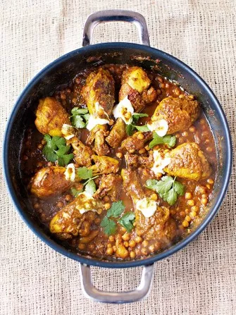

Pukka yellow curry
INGREDIENTS
- 2 onions
- 4 cloves of garlic
- 5 cm piece of ginger
- 2 yellow peppers
- 1 organic chicken stock cube
- 1-2 fresh red chillies
- ½ a bunch of fresh coriander , (15g)
- 1 teaspoon runny honey
- 1 level teaspoon ground tumeric
- 2 teaspoons curry powder
- 8 free-range chicken drumsticks
- olive oil
- 1 x 400 g tin of chickpeas
- 1 teaspoon tomato purée
- 1 mug of basmati rice , (320g)
- fat-free natural yoghurt , optional
- 1 lemon
Method
- Peel the onions, garlic and ginger and deseed the peppers.
- Put 1 onion, 1 pepper, the garlic and ginger into a food processor. Crumble in the stock cube and add the chilli (deseed it first, if you prefer a milder curry), the coriander stalks, honey and spices, then blitz to a paste.
- Place a large casserole pan on a medium-high heat and fry the chicken drumsticks (pull the skin off first, if you prefer) with a splash of oil for 10 minutes, or until golden, turning occasionally with tongs. Remove the chicken to a
plate,
leaving the pan on the heat.
- Roughly chop the remaining onion and pepper and add to the pan to cook for a few minutes, then tip in the paste and let it cook down for around 5 minutes.
- Pour in 500ml of boiling water. Drain the chickpeas and add along with the tomato purée and a pinch of sea salt and black pepper, then stir well.
- Return the chicken to the pan, pop the lid on, reduce the heat and simmer gently for around 45 minutes, or until the sauce darkens and thickens.
- With 15 minutes to go, put 1 mug (320g) of rice and 2 mugs of boiling water into a pan with a pinch of salt and simmer with the lid on for 12 minutes, or until all the liquid has been absorbed.
- Serve the curry in the middle of the table with a few dollops of yoghurt (if using) and a scattering of coriander leaves, with lemon wedges for squeezing over and the fluffy rice on the side.
Com.